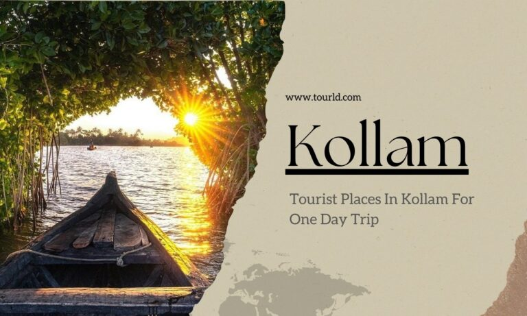
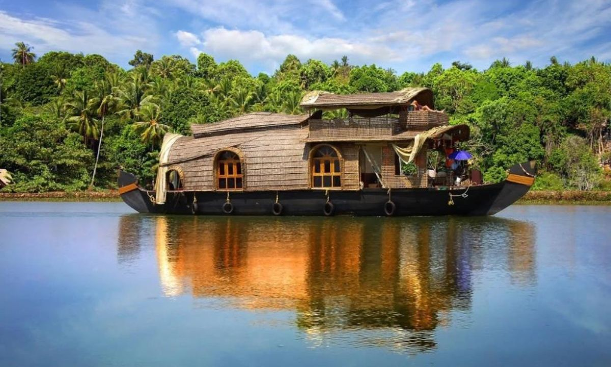
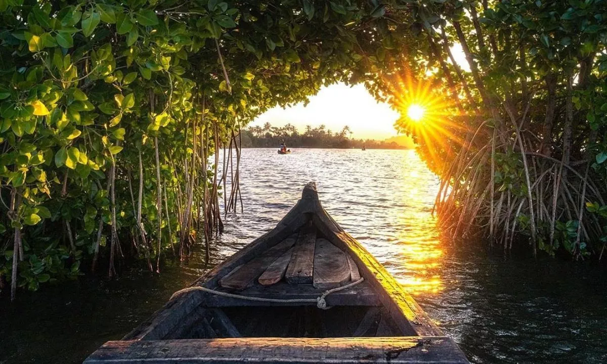
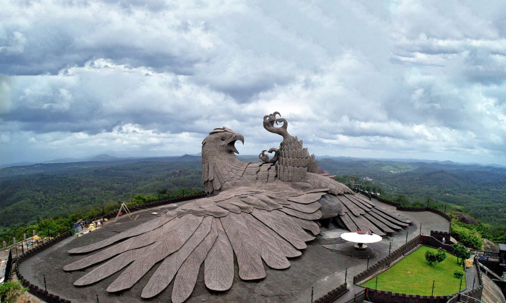

City of Kollam or Quilon is known as Prince of Arabian Sea, situated on the banks of Arabian Sea and Ashtamudi Lake. A major portion of Kollam Municipal Corporation area is occupied by Ashtamudi Lake.

Ashtamudi Lake
Ashtamudi Lake, often referred to as the gateway to the backwaters of Kerala, is a picturesque water body that boasts of lush green surroundings and serene waters.
It is one of the most beautiful and tranquil spots in Kollam.
Location: Ashtamudi Lake, Kollam, Kerala.
Best Time to Visit: To fully enjoy the beauty of Ashtamudi Lake, visit during the post-monsoon season, from September to March.
Travel Cost per Day: A ride on a traditional Kerala houseboat is the perfect way to explore this stunning lake, and prices can vary. Budget travelers can opt for smaller boat rides, while luxury houseboats may be pricier.

Munroe Island
Munroe Island is a hidden gem in Kollam, named after Colonel John Munroe, a British resident who developed this island for trade and commerce. It’s renowned for its picturesque canals, coconut groves, and lush green landscapes.
Location: Munroe Island, Kollam, Kerala.
Best Time to Visit: Visit Munroe Island during the winter months, from November to February, to enjoy the pleasant weather and explore its natural beauty.
Travel Cost per Day: A boat ride through the backwaters of Munroe Island is a must, and the cost can vary depending on the duration and type of boat ride you choose.

Jatayu Earth’s Center
Jatayu Earth’s Center is a unique tourist attraction that combines nature, mythology and adventure. It features a colossal sculpture of the mythical bird, Jatayu and offers exciting adventure activities like rock climbing and trekking.
Location: Jatayu Earth’s Center, Chadayamangalam, Kollam, Kerala.
Best Time to Visit: The Jatayu Earth’s Center can be visited year round, but it’s recommended to go during the winter months for a comfortable experience.
Travel Cost per Day: The cost of entry and adventure activities at Jatayu Earth’s Center may vary, so it’s advisable to check the official website for the latest prices.